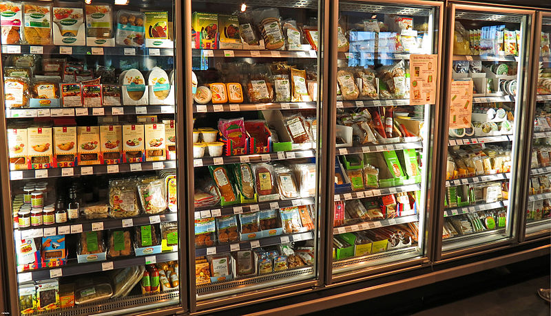

Un reciente estudio revelo que el mercado vegano de Europa creció al menos un 49% en solo dos años, alcanzando un total de 3.600 millones de euros en ventas.
El Informe del sector alimentario vegetal de proteínas inteligentes recopila datos de Nielsen MarketTrack no vistos anteriormente sobre los supermercados en 11 países europeos diferentes durante los últimos tres años (2017-2020). Según ProVeg International, una ONG basada en plantas que coprodujo el estudio, es la descripción general más grande y precisa de los hábitos de los consumidores europeos hasta la fecha.
Las ventas de leche de origen vegetal lideran el sector en la mayoría de los países de la UE, y la leche de avena, en particular, muestra la tasa de crecimiento más alta de todas. Las ventas de carne vegana son las segundas más altas; Solo el sector alemán de proteínas vegetales creció un 226%, alcanzando 181 millones de euros en ventas.
Austria también informó de un aumento significativo en las ventas de carne vegana, con un 82 por ciento en los dos períodos anuales anteriores. El país experimentó un 57% más de ventas basadas en plantas en general, con una demanda adicional de los consumidores en las tiendas de descuento.
En Dinamarca, la categoría de carne vegana creció un 50% durante el mismo período, y más del 40 por ciento de esta también se vendió en tiendas de descuento.
Las compras de queso de origen vegetal siguieron creciendo en Europa, con un aumento del 77 % en Alemania y del 140% en los Países Bajos. En general, la categoría de queso holandés sin lácteos se disparó en un enorme 400%.
En España, todas las categorías experimentaron un “crecimiento de dos dígitos”, pero la leche vegana lideró el mercado nacional en términos de valor con 318 millones de euros.
